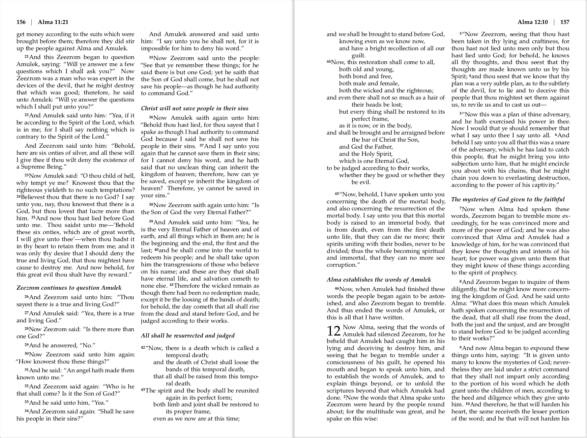
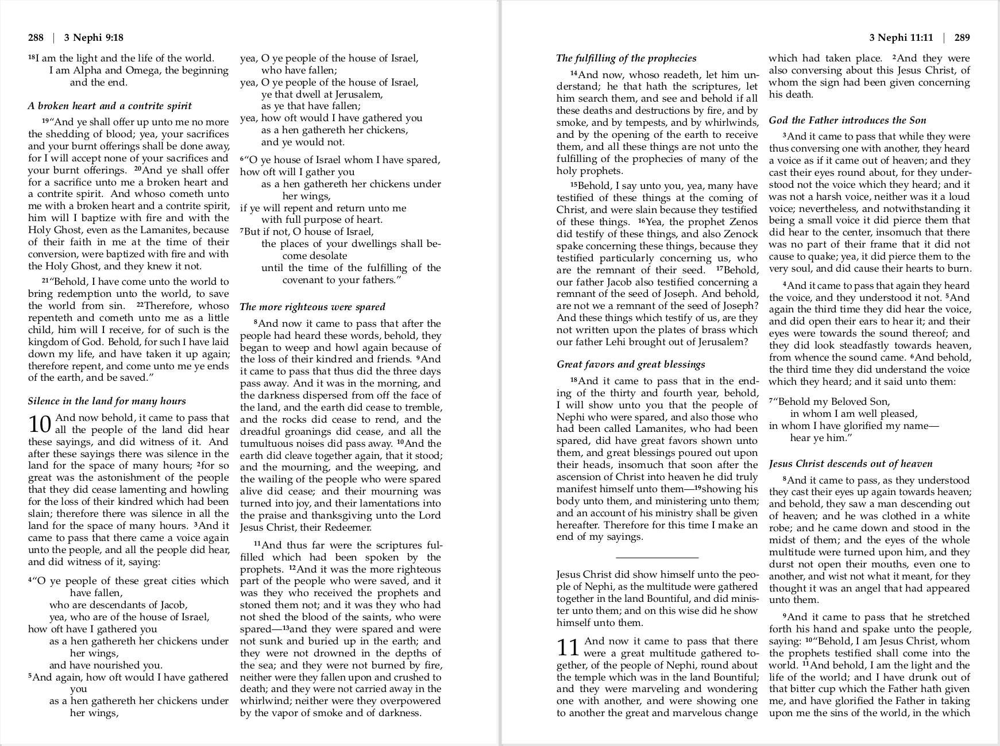

The Book of Mormon: Another Testament of Jesus Christ is a volume of holy scripture comparable to the Bible. It is a record of God's dealings with ancient inhabitants of the Americas and contains the fulness of the everlasting gospel. To learn more, see ComeUntoChrist.org.
Over the years, I've created this new edition of the Book of Mormon as a personal study project. It has the same text as the official LDS edition, but with modern formatting inspired by the NIV Bible.
The text is organized into paragraphs, with verse numbers as superscripts. Chapter headings have been replaced by section headings within the text. Quote marks have been added to indicate dialog and citation of scripture. Poetry, lists, prayers, and other literary elements have special typesetting. All footnotes have been removed, and page headings have been simplified. Some of the capitalization and punctuation choices have been modernized.
The complete PDF is available as a free download. If you have questions or feedback, please don't hesitate to get in touch.
In contrast to other editions that have been organized into paragraphs, this edition uses a traditional two-column format. The page size is 6"x9", which makes the book lightweight and easy to take with you. The main text is set in Palatino 9-point font.


I'm certainly not the only one to have reformatted the Book of Mormon. Here are links to other recent editions of which I'm aware:
Thinline Edition © 2019 by Chris Mayfield. All rights reserved. Text of the Book of Mormon © 1981, 2013 by Intellectual Reserve, Inc. Used with permission.
The text of this edition is licensed with the following disclaimer: The product offered by Chris Mayfield is neither made, provided, approved, nor endorsed by Intellectual Reserve, Inc. or The Church of Jesus Christ of Latter-day Saints. Any content or opinions expressed, implied, or included herein or herewith are solely those of Chris Mayfield and not those of Intellectual Reserve, Inc. or The Church of Jesus Christ of Latter-day Saints.
My hope and intent in typesetting the Book of Mormon is that people will better understand its message and appreciate the depth and complexity of its narrative. For many years, the Book of Mormon has greatly strengthened my testimony of the Lord Jesus Christ and His latter-day work, as have the Old and New Testaments, the Doctrine and Covenants, and the Pearl of Great Price. These volumes of scripture truly contain the words of eternal life.